Diagnostic Plot for Uniform Distribution
Lei Sun
2017-05-02
Last updated: 2018-05-12
workflowr checks: (Click a bullet for more information)-
✔ R Markdown file: up-to-date
Great! Since the R Markdown file has been committed to the Git repository, you know the exact version of the code that produced these results.
-
✔ Environment: empty
Great job! The global environment was empty. Objects defined in the global environment can affect the analysis in your R Markdown file in unknown ways. For reproduciblity it’s best to always run the code in an empty environment.
-
✔ Seed:
set.seed(12345)The command
set.seed(12345)was run prior to running the code in the R Markdown file. Setting a seed ensures that any results that rely on randomness, e.g. subsampling or permutations, are reproducible. -
✔ Session information: recorded
Great job! Recording the operating system, R version, and package versions is critical for reproducibility.
-
Great! You are using Git for version control. Tracking code development and connecting the code version to the results is critical for reproducibility. The version displayed above was the version of the Git repository at the time these results were generated.✔ Repository version: ddf9062
Note that you need to be careful to ensure that all relevant files for the analysis have been committed to Git prior to generating the results (you can usewflow_publishorwflow_git_commit). workflowr only checks the R Markdown file, but you know if there are other scripts or data files that it depends on. Below is the status of the Git repository when the results were generated:
Note that any generated files, e.g. HTML, png, CSS, etc., are not included in this status report because it is ok for generated content to have uncommitted changes.Ignored files: Ignored: .DS_Store Ignored: .Rhistory Ignored: .Rproj.user/ Ignored: analysis/.DS_Store Ignored: analysis/BH_robustness_cache/ Ignored: analysis/FDR_Null_cache/ Ignored: analysis/FDR_null_betahat_cache/ Ignored: analysis/Rmosek_cache/ Ignored: analysis/StepDown_cache/ Ignored: analysis/alternative2_cache/ Ignored: analysis/alternative_cache/ Ignored: analysis/ash_gd_cache/ Ignored: analysis/average_cor_gtex_2_cache/ Ignored: analysis/average_cor_gtex_cache/ Ignored: analysis/brca_cache/ Ignored: analysis/cash_deconv_cache/ Ignored: analysis/cash_fdr_1_cache/ Ignored: analysis/cash_fdr_2_cache/ Ignored: analysis/cash_fdr_3_cache/ Ignored: analysis/cash_fdr_4_cache/ Ignored: analysis/cash_fdr_5_cache/ Ignored: analysis/cash_fdr_6_cache/ Ignored: analysis/cash_plots_cache/ Ignored: analysis/cash_sim_1_cache/ Ignored: analysis/cash_sim_2_cache/ Ignored: analysis/cash_sim_3_cache/ Ignored: analysis/cash_sim_4_cache/ Ignored: analysis/cash_sim_5_cache/ Ignored: analysis/cash_sim_6_cache/ Ignored: analysis/cash_sim_7_cache/ Ignored: analysis/correlated_z_2_cache/ Ignored: analysis/correlated_z_3_cache/ Ignored: analysis/correlated_z_cache/ Ignored: analysis/create_null_cache/ Ignored: analysis/cutoff_null_cache/ Ignored: analysis/design_matrix_2_cache/ Ignored: analysis/design_matrix_cache/ Ignored: analysis/diagnostic_ash_cache/ Ignored: analysis/diagnostic_correlated_z_2_cache/ Ignored: analysis/diagnostic_correlated_z_3_cache/ Ignored: analysis/diagnostic_correlated_z_cache/ Ignored: analysis/diagnostic_plot_2_cache/ Ignored: analysis/diagnostic_plot_cache/ Ignored: analysis/efron_leukemia_cache/ Ignored: analysis/fitting_normal_cache/ Ignored: analysis/gaussian_derivatives_2_cache/ Ignored: analysis/gaussian_derivatives_3_cache/ Ignored: analysis/gaussian_derivatives_4_cache/ Ignored: analysis/gaussian_derivatives_5_cache/ Ignored: analysis/gaussian_derivatives_cache/ Ignored: analysis/gd-ash_cache/ Ignored: analysis/gd_delta_cache/ Ignored: analysis/gd_lik_2_cache/ Ignored: analysis/gd_lik_cache/ Ignored: analysis/gd_w_cache/ Ignored: analysis/knockoff_10_cache/ Ignored: analysis/knockoff_2_cache/ Ignored: analysis/knockoff_3_cache/ Ignored: analysis/knockoff_4_cache/ Ignored: analysis/knockoff_5_cache/ Ignored: analysis/knockoff_6_cache/ Ignored: analysis/knockoff_7_cache/ Ignored: analysis/knockoff_8_cache/ Ignored: analysis/knockoff_9_cache/ Ignored: analysis/knockoff_cache/ Ignored: analysis/knockoff_var_cache/ Ignored: analysis/marginal_z_alternative_cache/ Ignored: analysis/marginal_z_cache/ Ignored: analysis/mosek_reg_2_cache/ Ignored: analysis/mosek_reg_4_cache/ Ignored: analysis/mosek_reg_5_cache/ Ignored: analysis/mosek_reg_6_cache/ Ignored: analysis/mosek_reg_cache/ Ignored: analysis/pihat0_null_cache/ Ignored: analysis/plot_diagnostic_cache/ Ignored: analysis/poster_obayes17_cache/ Ignored: analysis/real_data_simulation_2_cache/ Ignored: analysis/real_data_simulation_3_cache/ Ignored: analysis/real_data_simulation_4_cache/ Ignored: analysis/real_data_simulation_5_cache/ Ignored: analysis/real_data_simulation_cache/ Ignored: analysis/rmosek_primal_dual_2_cache/ Ignored: analysis/rmosek_primal_dual_cache/ Ignored: analysis/seqgendiff_cache/ Ignored: analysis/simulated_correlated_null_2_cache/ Ignored: analysis/simulated_correlated_null_3_cache/ Ignored: analysis/simulated_correlated_null_cache/ Ignored: analysis/simulation_real_se_2_cache/ Ignored: analysis/simulation_real_se_cache/ Ignored: analysis/smemo_2_cache/ Ignored: data/LSI/ Ignored: docs/.DS_Store Ignored: docs/figure/.DS_Store Ignored: output/fig/ Unstaged changes: Deleted: analysis/cash_plots_fdp.Rmd
Expand here to see past versions:
| File | Version | Author | Date | Message |
|---|---|---|---|---|
| rmd | cc0ab83 | Lei Sun | 2018-05-11 | update |
| html | 0f36d99 | LSun | 2017-12-21 | Build site. |
| html | 853a484 | LSun | 2017-11-07 | Build site. |
| html | 6639968 | LSun | 2017-11-05 | transfer |
| rmd | 39efc83 | LSun | 2017-05-03 | uniform diagnostic |
| html | 39efc83 | LSun | 2017-05-03 | uniform diagnostic |
| rmd | 98a94d1 | LSun | 2017-05-03 | uniformity diagnostic |
| html | 98a94d1 | LSun | 2017-05-03 | uniformity diagnostic |
Introduction
Suppose we have \(n\) iid samples presumably from \(\text{Uniform}\left[0, 1\right]\). Our goal is to make a diagnostic plot to check if they are truly coming from \(\text{Uniform}\left[0, 1\right]\).
Plotting positions
The basic tool is the Q-Q plot. Basically, we are ploting the sample quantiles against their theoretical quantiles, also called “plotting positions.” But it turns out it’s more complicated than what it appears, because it’s not clear what are the best “theoretical quantiles” or plotting positions. For example, \(\left\{1/n, 2/n, \ldots, n/n\right\}\) appears an obvious option, but if the distribution is normal, the quantile of \(n/n = 1\) is \(\infty\). Even if the distribution is compactly supported, like \(\text{Uniform}\left[0, 1\right]\), the quantile of \(1\) is \(1\), yet the largest sample will always be strictly less than \(1\).
This is called the “plotting positions problem.” It has a long history and a rich literature. Harter 1984 and Makkonen 2008 seem to be two good reviews. Popular choices include \(\left\{\frac{k-0.5}{n}\right\}\), \(\left\{\frac{k}{n+1}\right\}\), \(\left\{\frac{k - 0.3}{n+0.4}\right\}\), or in general, \(\left\{\frac{k-\alpha}{n+1-2\alpha}\right\}\), \(\alpha\in\left[0, 1\right]\), which approximates \(F\left(E\left[X_{(k)}\right]\right)\) for certain \(\alpha\), and includes all above as special cases.
For practical purposes, for \(\text{Uniform}\left[0, 1\right]\) distribution, we are using \(\left\{\frac{1}{n+1}, \frac{2}{n+1}, \ldots, \frac{n}{n+1}\right\}\) as plotting positions for diagnosing \(\text{Uniform}\left[0, 1\right]\). Harter 1984 provided some justification for this choice. In short, \(\text{Uniform}\left[0, 1\right]\) is unique in that it has the property
\[ \displaystyle F\left(E\left[X_{(k)}\right]\right) = E\left[F\left(X_{(k)}\right)\right] = \frac{k}{n + 1} \ , \] where \(X_{(k)}\) is the order statistic.
De-trending the \(0\)-\(1\) line
Another problem is also related to Q-Q plots in general, and especially to the problem we have right now. In uniform Q-Q plots, in Matthew’s words, “current plots are dominated by the trend from 0 to 1,” so it’ would be better to “remove that trend to better highlight the deviations from the expectation.”
The order statistics \(X_{(k)}\) for \(\text{Uniform}\left[0, 1\right]\) follows a beta distribution,
\[ X_{(k)} \sim \text{Beta}\left(k, n+1-k\right) \ , \]
which has the mean and variance as
\[ \begin{array}{rcll} E\left[X_{(k)}\right] & = & \displaystyle\frac{k}{n+1} &;\\ Var\left(X_{(k)}\right) &=& \displaystyle\frac{k(n - k + 1)}{\left(n+1\right)^2\left(n + 2\right)} &. \end{array} \]
Therefore, we can plot \(X_{(k)} - E\left[X_{(k)}\right]\) along with two error bounds. One choice of the error bounds is to use \(\pm2\sqrt{Var\left(X_{(k)}\right)}\) (in blue); another is to use the \(\alpha / 2\) and \(1-\alpha/2\) quantiles of \(\text{Beta}\left(k, n+1-k\right)\) (in red). Points outside the error bounds thus indicate deviation from the uniform distribution. This plot can be called the de-trended plot.
As an example, here is a data set of \(10K\) null \(z\) scores distorted by correlation. We apply ASH to this data set. Since the empirical distribution of these \(z\) scores are highly non-normal due to correlation, presumably ASH with normal prior components and normal likelihood wouldn’t fit this data set well.
z = read.table("../output/z_null_liver_777.txt")z.33 = as.numeric(z[33, ])library(ashr)
fit = ash.workhorse(z.33, 1, method = "fdr", mixcompdist = "normal")
cdfhat = plot_diagnostic(fit, plot.it = FALSE)The histogram of the data set is plotted as follows, as compared with the density of \(N(0, 1)\). In this case since \(\hat s\equiv 1\), all \(\hat z_j\) share the same estimated predictive density, defined as
\[ \hat f = \hat g * N(0, \hat s_j^2 \equiv 1) \ . \]
\(\hat f(x)\) at a given set of \(x\) positions can be evaluated using the following R code.
fhat = function(ash.fit, x, sebetahat = 1) {
data = ashr::set_data(x, sebetahat, ash.fit$data$lik, ash.fit$data$alpha)
return(ashr:::dens_conv.default(ash.fit$fitted_g, data))
}W can also plot the estimated predictive density (in blue) on top of the histogram. As we can see, the blue line is not fitting the histogram well, as an indicator of ASH’s lack of goodness of fit to this data set.
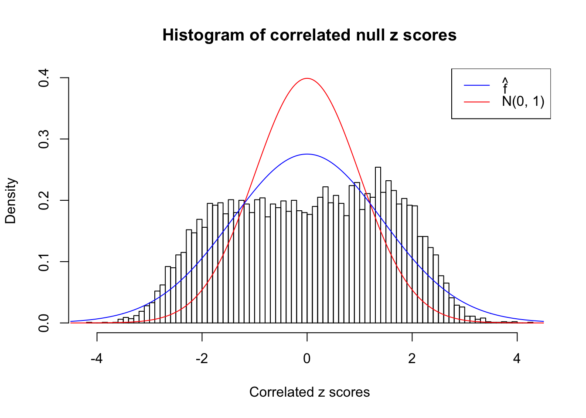
The predictive CDF of this data set should be far from \(\text{Uniform}\left[0, 1\right]\), so the diagnostic Q-Q plot should be conspicuously deviating from the \(0\)-\(1\) straight line. And we’ve also seen many points outside of the error bounds in the de-trended plot. We can also see that the two choices of error bounds don’t make too much difference.
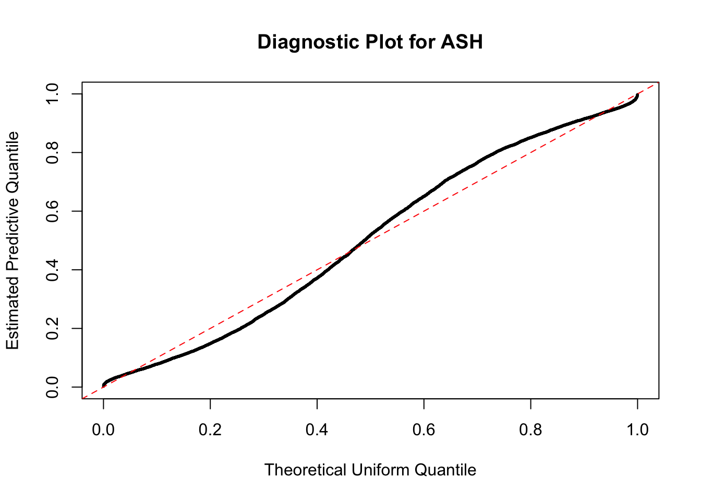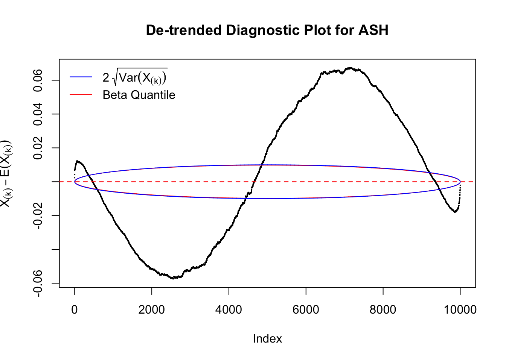
Idea 1: Ignore it
Take a look at the non-uniform plot and the ten uniform plots. It’s true that the uniform ones are not-uncommonly outside the error bounds, but they are not going too far, compared with that non-uniform one. So maybe we can just ignore the “casual” bound-crossings and accept them as uniform. Of course this will generate a lot of ambiguity for borderline cases, but borderline cases are difficult any way.
Idea 2: Bonferroni correction
Instead of using an error bound that’s at \(\alpha\) level for each order statistic, we can use Bonferroni correction at \(\alpha / n\) level. Hopefully it will control false positives whereas still be powerful. Let’s take a look at the previously run examples.
Non-uniform
In the presence of strong non-uniformity, the de-trended plot is still well outside the Bonferroni-corrected error bounds.
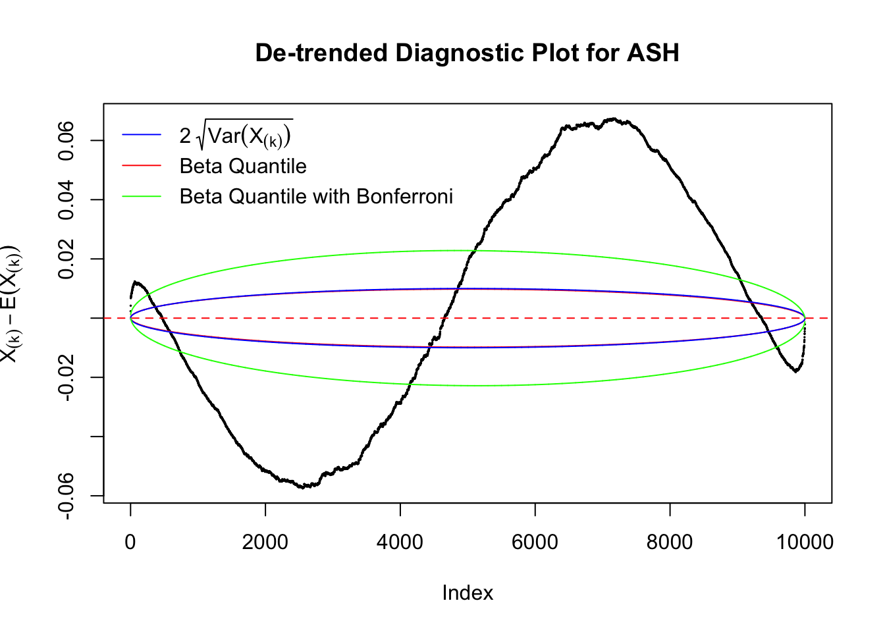
Uniform
As always with Bonferroni correction, it could seem under-powered, or over-controlling the type I error.


Idea 3: Predictive density on top of histogram
As discussed above, when we have constant \(\hat s_j\equiv s\), the estimated predictive density \(\hat f = \hat g * N\left(0, s^2\right)\) is the same for all observations. Therefore, we could plot \(\hat f\left(\hat \beta_j\right)\) on top of the histogram of all \(\hat \beta_j\) to see if ASH fits the data and estimates the prior \(g\) well.
We are selecting four data sets with \(N(0, 1)\) \(z\) scores distorted by correlation. The first two are inflated, and the latter two mildly deflated. ASH has a hard time handling both cases, and the fitted predictive density curves can show that.
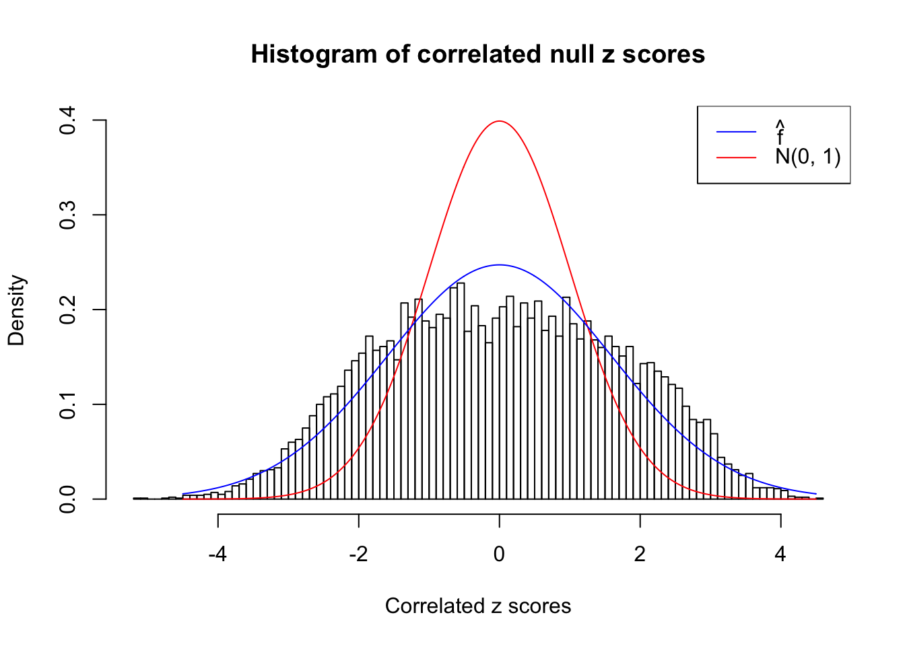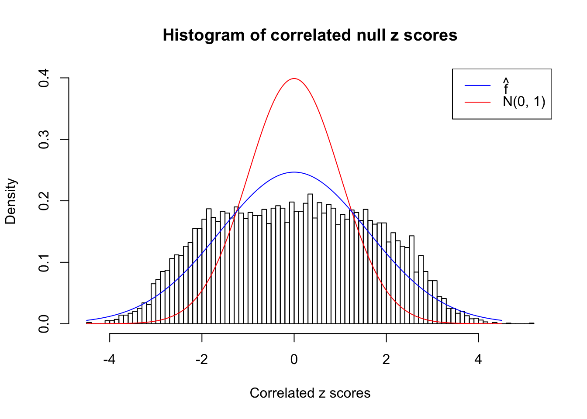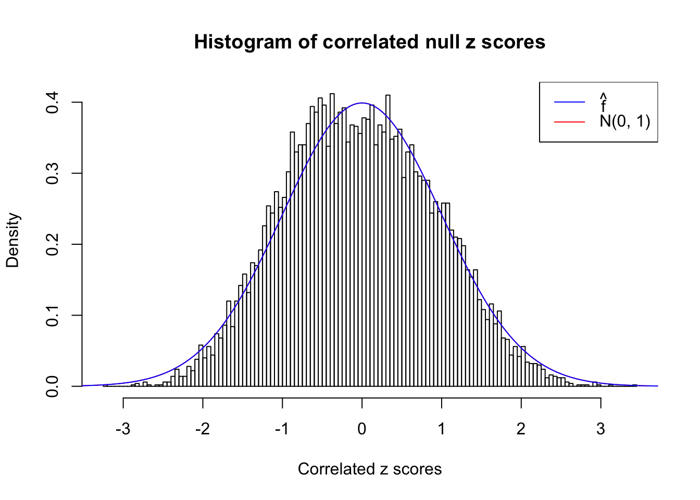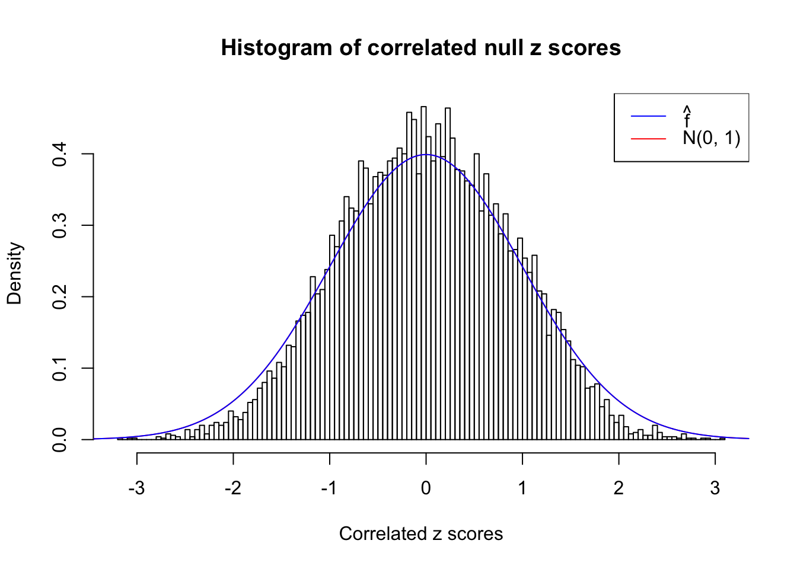
Idea 4: Kolmogorov-Smirnov (K-S) test
As explained in Wikipedia,
In statistics, the Kolmogorov–Smirnov test (K–S test or KS test) is a nonparametric test of the equality of continuous, one-dimensional probability distributions that can be used to compare a sample with a reference probability distribution (one-sample K–S test), or to compare two samples (two-sample K–S test). It is named after Andrey Kolmogorov and Nikolai Smirnov.
The K-S test gives a \(p\)-value, which can be displayed alongside all kinds of diagnostic plots mentioned above, as below.
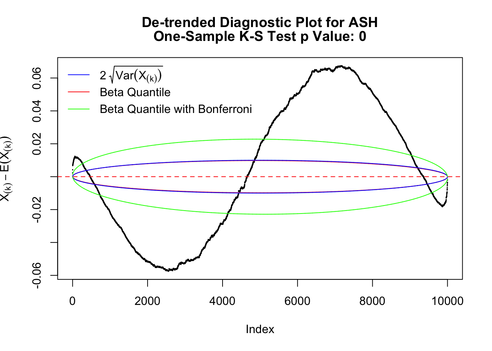
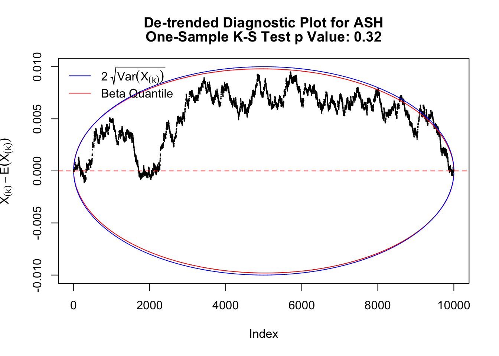
Idea 5: Empirical CDF and DKW inequality
The K-S test is related to the DKW inequality for the empirical CDF. Let \(X_1, \ldots, X_n\) be \(n\) iid samples from \(F\). Let \(F_n\) denote the empirical cumulative distribution function estimated from them. Then
\[ \Pr\left(\sup\limits_{x\in\mathbb{R}}\left|F_n\left(x\right) - F\left(x\right)\right| > \epsilon\right) \leq 2e^{-2n\epsilon^2} \ . \]
Therefore, we can set \(\epsilon\) so that \(\alpha = 2e^{-2n\epsilon^2}\), and plot \(F_n\left(X_{(k)}\right) - F\left(X_{(k)}\right) = \frac kn - X_{(k)}\) against \(\pm\epsilon\). Note that in this case we are plotting \(F_n\left(X_{(k)}\right) - F\left(X_{(k)}\right)\), not \(X_{(k)} - E\left[X_{(k)}\right]\), but under uniform they are very close, with no practical difference.
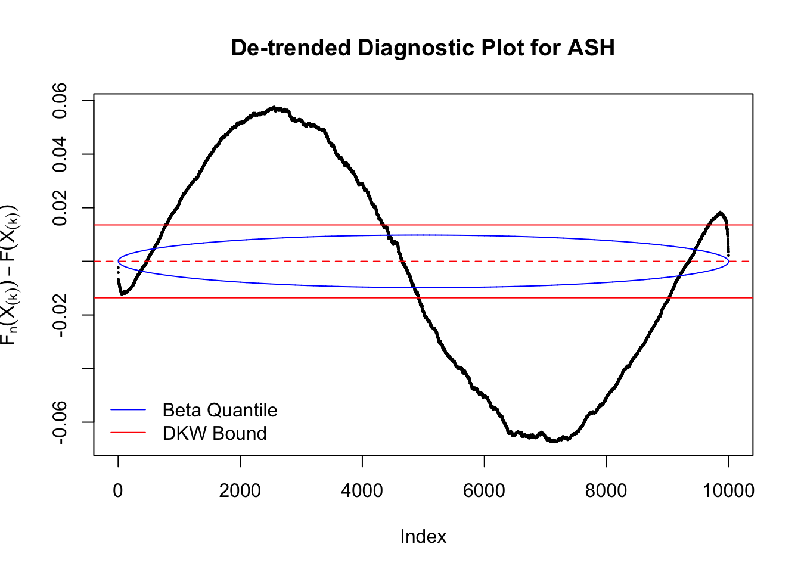
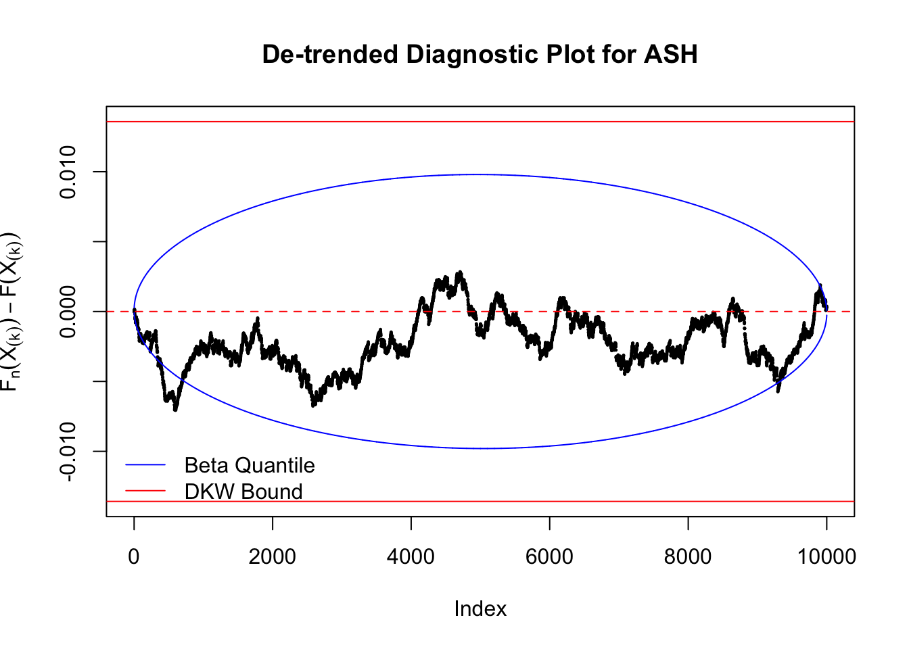
Session information
sessionInfo()R version 3.4.3 (2017-11-30)
Platform: x86_64-apple-darwin15.6.0 (64-bit)
Running under: macOS High Sierra 10.13.4
Matrix products: default
BLAS: /Library/Frameworks/R.framework/Versions/3.4/Resources/lib/libRblas.0.dylib
LAPACK: /Library/Frameworks/R.framework/Versions/3.4/Resources/lib/libRlapack.dylib
locale:
[1] en_US.UTF-8/en_US.UTF-8/en_US.UTF-8/C/en_US.UTF-8/en_US.UTF-8
attached base packages:
[1] stats graphics grDevices utils datasets methods base
loaded via a namespace (and not attached):
[1] workflowr_1.0.1 Rcpp_0.12.16 digest_0.6.15
[4] rprojroot_1.3-2 R.methodsS3_1.7.1 backports_1.1.2
[7] git2r_0.21.0 magrittr_1.5 evaluate_0.10.1
[10] stringi_1.1.6 whisker_0.3-2 R.oo_1.21.0
[13] R.utils_2.6.0 rmarkdown_1.9 tools_3.4.3
[16] stringr_1.3.0 yaml_2.1.18 compiler_3.4.3
[19] htmltools_0.3.6 knitr_1.20
This reproducible R Markdown analysis was created with workflowr 1.0.1